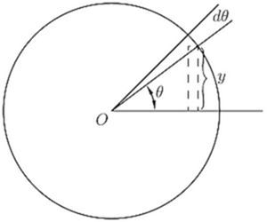
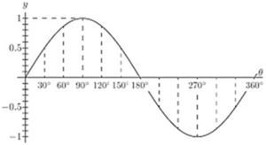
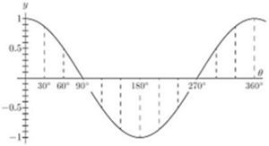

Chapter 17: Chapter XV. How to Deal with Sines and Cosines¶
17.1 Chapter XV. How to Deal with Sines and Cosines¶
GREEK letters being usual to denote angles, we will take as the usual letter for any variable angle the letter ("theta").
Let us consider the function

What we have to investigate is the value of ; or, in other words, if the angle varies, we have to find the relation between the increment of the sine and the increment of the angle, both increments being indefinitely small in themselves. Examine Fig. 43, wherein, if the radius of the circle is unity, the height of is the sine, and is the angle. Now, if is supposed to increase by the addition to it of the small angle —an element of angle—the height of , the sine, will be increased by a small element . The new height will be the sine of the new angle , or, stating it as an equation, and subtracting from this the first equation gives
The quantity on the right-hand side is the difference between two sines, and books on trigonometry tell us how to work this out. For they tell us that if and are two different angles,
If, then, we put for one angle, and for the other, we may write
But if we regard as indefinitely small, then in the limit we may neglect by comparison with , and may also take as being the same as . The equation then becomes:
The accompanying curves, Figs. 44 and 45, show, plotted to scale, the values of , and , for the corresponding values of .


Take next the cosine.
Let .
Now .
Therefore ![StartLayout 1st Row 1st Column d y equals d left parenthesis sine left parenthesis StartFraction pi Over 2 EndFraction minus theta right parenthesis right parenthesis 2nd Column equals cosine left parenthesis StartFraction pi Over 2 EndFraction minus theta right parenthesis times d left parenthesis negative theta right parenthesis comma 2nd Row 1st Column Blank 2nd Column equals cosine left parenthesis StartFraction pi Over 2 EndFraction minus theta right parenthesis times left parenthesis minus d theta right parenthesis comma 3rd Row 1st Column StartFraction d y Over d theta EndFraction equals minus cosine left parenthesis StartFraction pi Over 2 EndFraction minus theta right parenthesis period EndLayout](img/1305.svg)
And it follows that
Lastly, take the tangent.
Let
Expanding, as shown in books on trigonometry, ![StartLayout 1st Row 1st Column tangent left parenthesis theta plus d theta right parenthesis 2nd Column equals StartFraction tangent theta plus tangent d theta Over 1 minus tangent theta dot tangent d theta EndFraction semicolon 2nd Row 1st Column whence d y 2nd Column equals StartFraction tangent theta plus tangent d theta Over 1 minus tangent theta dot tangent d theta EndFraction minus tangent theta 3rd Row 1st Column Blank 2nd Column equals StartFraction left parenthesis 1 plus tangent squared theta right parenthesis tangent d theta Over 1 minus tangent theta dot tangent d theta EndFraction period EndLayout](img/1308.svg)
Now remember that if is indefinitely diminished, the value of becomes identical with , and is negligibly small compared with 1, so that the expression reduces to
Collecting these results, we have:
Sometimes, in mechanical and physical questions, as, for example, in simple harmonic motion and in wave-motions, we have to deal with angles that increase in proportion to the time. Thus, if be the time of one complete period, or movement round the circle, then, since the angle all round the circle is radians, or , the amount of angle moved through in time , will be
If the frequency, or number of periods per second, be denoted by , then , and we may then write:
Then we shall have
If, now, we wish to know how the sine varies with respect to time, we must differentiate with respect, not to , but to . For this we must resort to the artifice explained in Chapter IX., p. 66, and put
Now will obviously be ; so that
Similarly, it follows that
Second Differential Coefficient of Sine or Cosine.
We have seen that when is differentiated with respect to it becomes and that when is differentiated with respect to it becomes ; or, in symbols,
So we have this curious result that we have found a function such that if we differentiate it twice over, we get the same thing from which we started, but with the sign changed from + to -.
The same thing is true for the cosine; for differentiating gives us , and differentiating gives us or thus:
Sines and cosines are the only functions of which the second differential coefficient is equal (and of opposite sign to) the original function.
Examples.
With what we have so far learned we can now differentiate expressions of a more complex nature.
(1) .
If is the arc whose sine is , then .
Passing now from the inverse function to the original one, we get
Now hence a rather unexpected result.
(2) .
This is the same thing as .
Let ; then ; .
(3) .
Let ; then .
(4) .
Let .
(5) .
(6) .
Let ; ; .
(7) .
Let (see p. 67). (for, if , hence )
hence .
(8) .
Exercises XIV. (See page 261 for Answers.)
(1) Differentiate the following:
(i) .
(ii) ; and .
(iii) ; and .
(2) Find the value of for which is a maximum.
(3) Differentiate .
(4) If , find .
(5) Differentiate .
(6) Differentiate .
(7) Plot the curve ; and show that the slope of the curve at is half the maximum slope.
(8) If , find .
(9) If , find the differential coefficient of with respect to .
(10) Differentiate .
(11) Differentiate the three equations of Exercises XIII. (p. 160), No. 4, and compare their differential coefficients, as to whether they are equal, or nearly equal, for very small values of , or for very large values of , or for values of in the neighbourhood of .
(12) Differentiate the following:
(i) .
(ii) .
(iii) .
(iv) .
(v) .
(13) Differentiate .
(14) Differentiate .
(15) Find the maximum or minimum of .